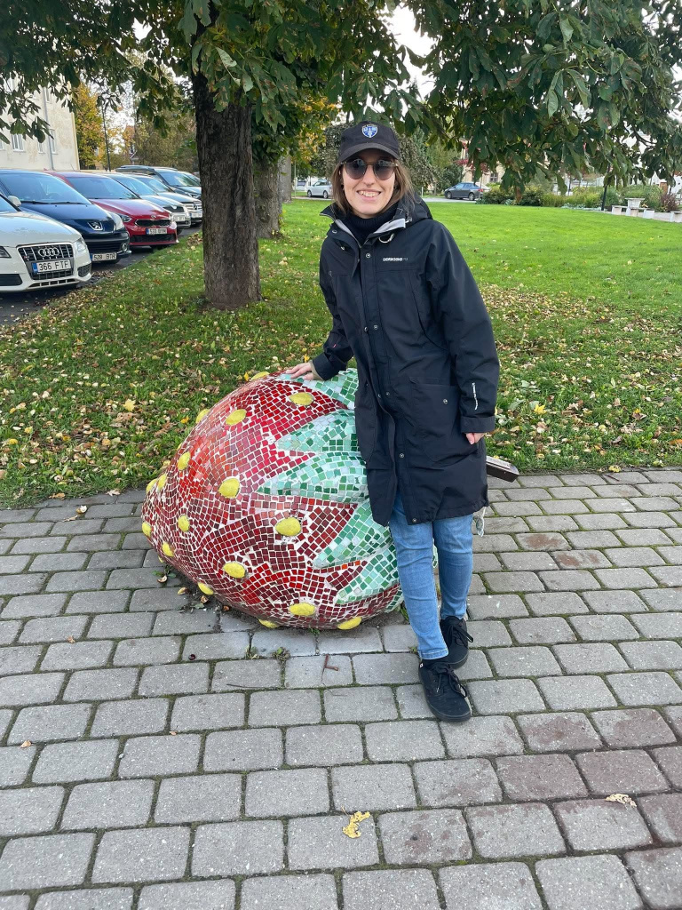

Salome Lole Dominguez Ortiz
Olen 25-aastane ja pärit Tartust. Mul on I ja II astme kõrgharidus maakorralduse erialal ning alates sellest õppeaastast omandan kutseharidust Viljandi Kutseõppekeskuses.
Hobid ja huvid
🍃 Metsloomade päästmine
🦅 Ornitoloogia